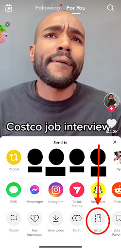
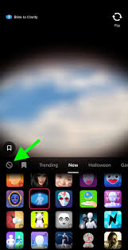
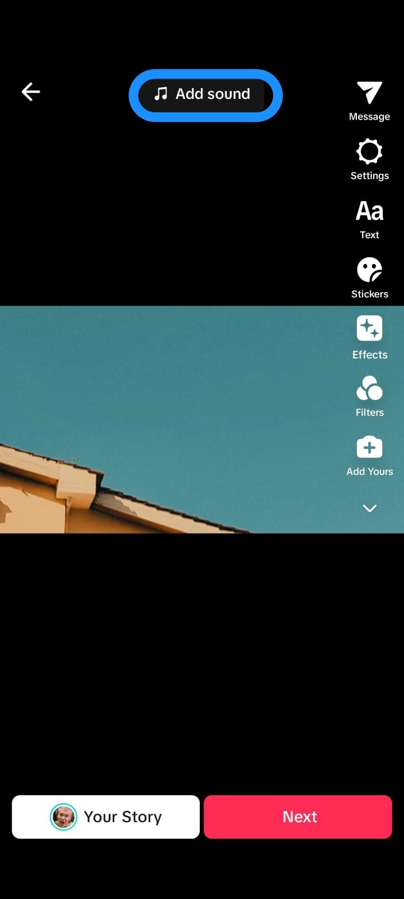

TikTok Content Creation Features
-
Duet
Collaborate with other TikTok users by recording a split-screen video alongside their existing content.
-

Stitch
Use another user's video clip to create your own content, adding to the original in innovative ways.
-
Video Editing
Edit your videos directly within TikTok, adding effects, transitions, and music to enhance your content.
-

Filters
Apply various filters to your videos to change their appearance and style, enhancing visual appeal.
-

Slideshow Maker
Create dynamic slideshows by compiling multiple images or video clips into a single TikTok video.
-

Voiceover
Add a voiceover to your videos for narration, commentary, or additional context, enhancing storytelling.